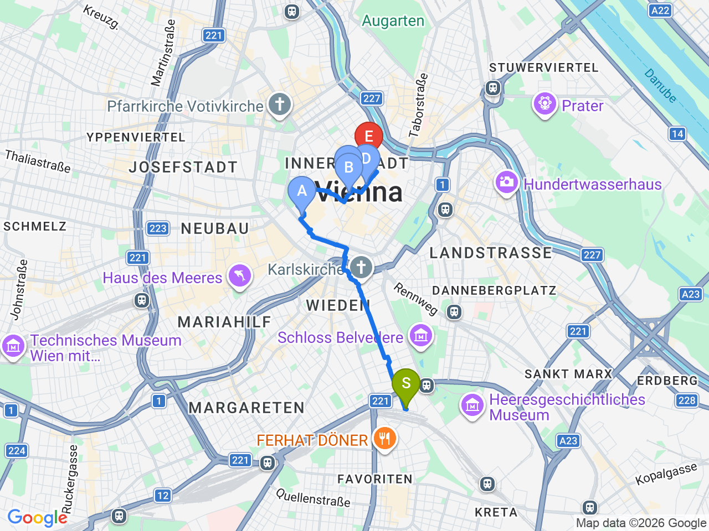
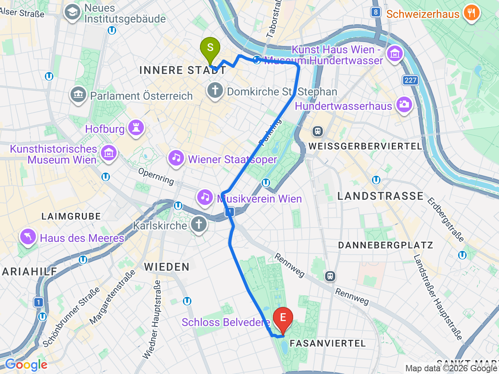

Day 36 · 2026-09-20（日）
奧地利・薩爾茲堡/德國國王湖/維也納 Day 8/9
維也納舊城核心＋美景宮：霍夫堡、安可鐘、大教堂、克林姆《吻》
上午舊城步行區收集地標，中午安可鐘報時秀＋Figlmüller炸豬排，下午美景宮朝聖克林姆名作
⏰美景宮上層宮殿（Upper Belvedere，克林姆《吻》所在）人潮尖峰時段會限流，建議官網 belvedere.at 提前買時段票（線上約€19.5，現場€21）；安可鐘（Ankeruhr）只有中午12點整才會播放全部12尊人偶的完整報時秀（約15分鐘），建議11:50前抵達卡位，其餘整點只會出現當時對應的1尊人偶；Café Sacher/Café Demel 晚餐時段排隊常見，用餐前可以先去現場登記或提前抵達
舊城核心（霍夫堡→Graben→大教堂→安可鐘）

舊城→美景宮

固定時間行程DAY 36
| 時間 | 地點 | 地點 (英文) | 交通方式／班次 | 價格 | 預計停留(分鐘) | 備註 |
|---|---|---|---|---|---|---|
| 09:30 | 霍夫堡外觀＋Michaelerplatz 廣場 | 1Hofburg, Vienna | 步行 | 免費 | 30 | 宮殿內裝已由9/18美泉宮完整涵蓋，這裡看建築群外觀即可 |
| 10:00 | Café Hawelka | 2Café Hawelka, Dorotheergasse 6, Vienna | 步行約5分鐘 | 約 €6-12／人 | 45 | 1939年開業的文人咖啡館，昏暗木質空間掛滿畫作，維也納咖啡館文化（UNESCO無形遺產）代表；備案 phil 書店咖啡（Gumpendorfer Straße 10-12，近 Naschmarkt，書店+咖啡+二手家具） |
| 10:45 | Graben 徒步區 | 3Graben, Vienna | 步行約5分鐘 | 免費 | 15 | 舊城最著名的步行購物街，黑死病紀念柱在這裡 |
| 11:00 | 史蒂芬大教堂 | 4Domkirche St. Stephan, Vienna | 步行約3分鐘 | 免費（內部）／南塔登頂約€6 | 30 | 維也納地標，彩色瓦片屋頂很經典；南塔登頂當天腳力再決定，行程已有多次高處視野 |
| 11:50 | 安可鐘卡位 | 5Hoher Markt, Vienna | 步行約5分鐘 | 免費 | 10 | 提前到場找個好視角，正中午才有完整報時秀 |
| 12:00 | 安可鐘（Ankeruhr）整點報時秀 | 6Hoher Markt, Vienna | 原地觀賞 | 免費 | 15 | 12尊歷史人物依序繞行報時，配樂演出，只有中午12點才會演出全部12尊 |
| 12:20 | 午餐：Figlmüller | 7Figlmüller, Wollzeile 5, Vienna | 步行約5分鐘 | 見上方三餐資訊 | 90 | 招牌炸豬排比臉大，建議提前訂位或現場登記 |
| 14:00 | 搭電車前往美景宮 | 電車約15-20分鐘 | ||||
| 14:30 | 美景宮（上層宮殿） | 8Belvedere Palace, Vienna | 自行入場 | 約€19.5（官網）／€21（現場） | 90 | 克林姆《吻》在這裡，建議提前買時段票 |
| 18:00 | 晚餐：Café Sacher 或 Café Demel | 搭電車/步行返回舊城 | 見上方三餐資訊 | 90 |
每日三餐
早餐
飯店早餐ibis Wien Hauptbahnhof
午餐
Figlmüller（Wollzeile 或 Bäckerstraße 分店）Figlmüller約 €20-30／人
📍 Wollzeile 5, Vienna（本店）／Bäckerstraße 6, Vienna（分店）維也納最著名的炸豬排（Wiener Schnitzel）老店，兩間分店都在安可鐘走路5分鐘內，看完報時秀直接過去很順；本店Wollzeile較小、常大排長龍，建議事先訂位或現場登記候位，Bäckerstraße分店空間較大、菜色也更多樣；備案：舊城區其他餐廳選擇很多，自由選擇也行
晚餐
Café Sacher Wien 或 Café Demel（擇一）Café Sacher / Café Demel約 €15-30／人
📍 Philharmoniker Str. 4, Vienna（Sacher）／Kohlmarkt 14, Vienna（Demel）Sacher 是原版Sachertorte發源地、就在歌劇院旁；Demel 是皇室御用甜點老店、常被拿來跟Sacher比較，兩間风格都很有代表性，時間夠可以兩間都各點一份比較看看
住宿資訊